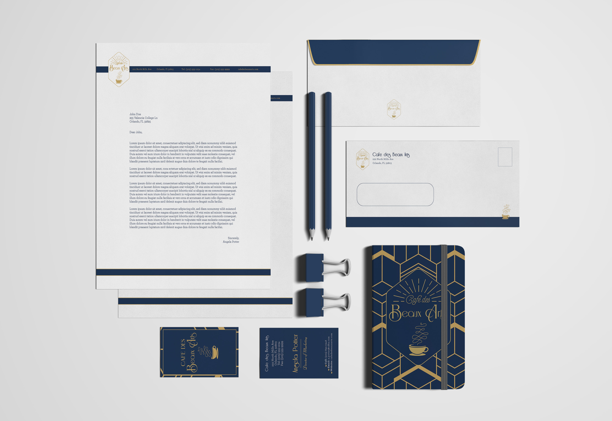
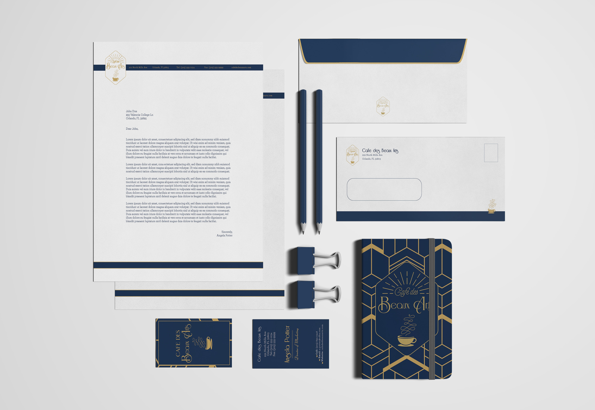
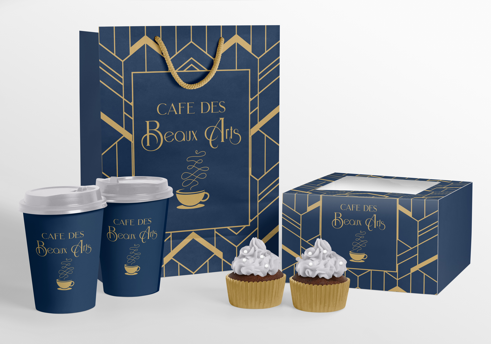
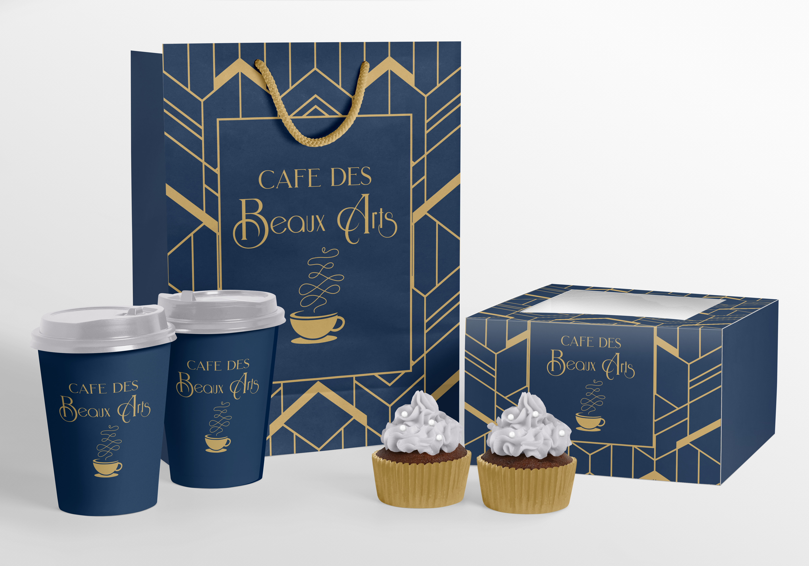
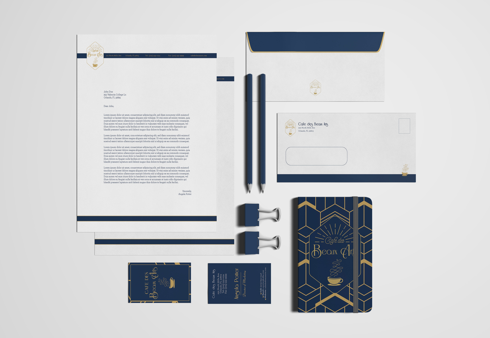
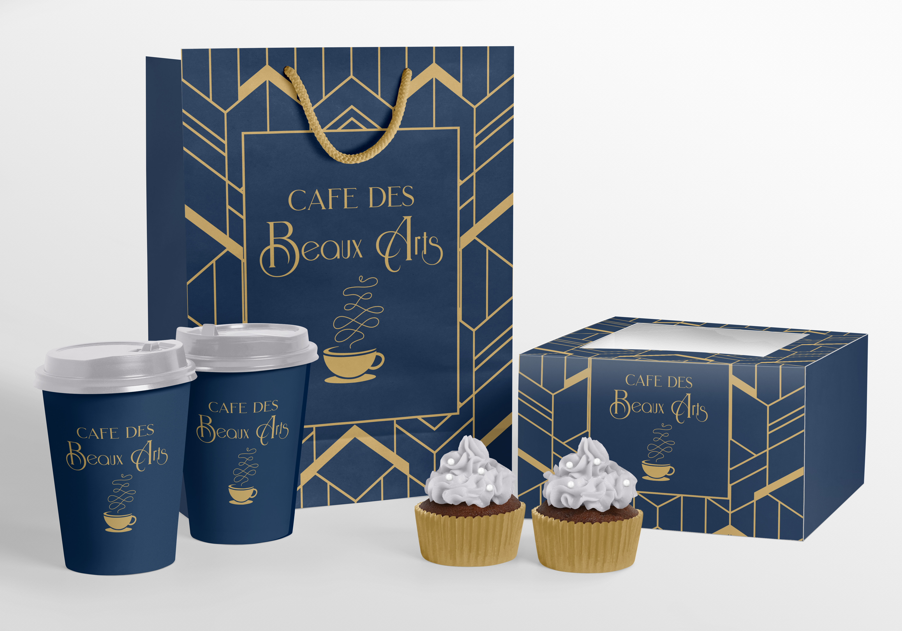

 



I had an exciting opportunity to design a brand identity package and website for a new coffee bar in Orlando,
Florida founded by John Lee, a passionate barista and coffee enthusiast. The brand’s goal was to introduce
the art of high-quality hand-craft coffee to the local community, emphasizing the importance of the brewing
process, and the time and meaningful conversation spent over a cup of hand-crafted coffee. John was inspired
by the Art Deco period and would like the brand to be associated with this era.
To capture Art Deco, which was known for its elegant, sophisticated style, and streamlined designs, I
incorporated bold geometric shapes, such as triangles, squares, and circles, into the logo and brand
identity. I used a color scheme of gold and navy to evoke a sense of luxury and sophistication, which is
synonymous with the Art Deco era.
Category: Brand Identity; Web Design
Tools: Adobe Photoshop, Adobe Illustrator, Figma

